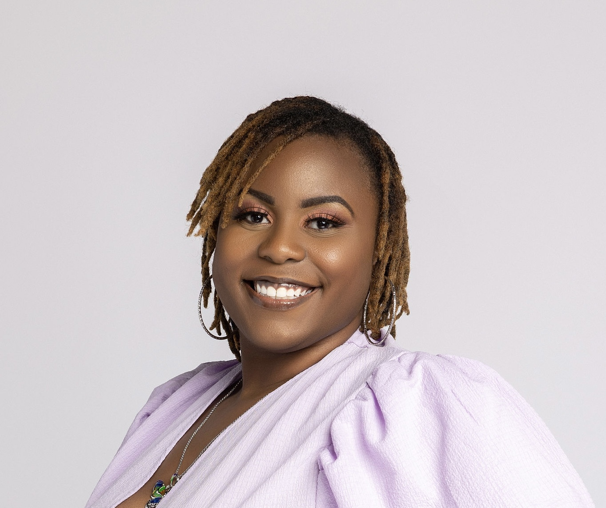

Zakiya Evans

Summary
Interested in Software Engineering roles with experience in developing and maintaining software solutions. Proficient in
HTML, CSS, SQL, Python, C++ and various analytics tools. Demonstrated ability to enhance user experiences and drive
innovation through detailed user testing and collaborative efforts.
Education
-
Bachelor of Science, Computer Science Information Systems - Tuskegee University (2016-2020)
-
Master of Business Administration - Louisiana State University - Shreveport (2021-2022)
Work Experience
-
Data and Analytics Early Careers Program Manager & Recruiter - JPMorganChase
October 2022 - Present
- Manage 20+ fellows, lead daily meetings, and provide performance feedback, boosting team productivity.
- Oversee recruitment for 30,000+ candidates, enhancing the candidate experience and process efficiency.
- Lead data science track for diversity programs, advancing DEI initiatives and equitable experiences.
- Plan and manage events for 100+ interns, ensuring successful program execution and participant satisfaction.
- Collaborate with operations teams to ensure legal compliance and seamless program operations.
-
Founder, Web Designer, and Brand Developer - Best Life Inside Out LLC
January 2020 - Present
- Design and maintain website using HTML, CSS, Figma, and Wix, enhancing user experience and SEO.
- Create and design merchandise, increasing brand loyalty and customer satisfaction.
- Lead fitness challenges for 200+ women, improving health and wellness through targeted programs.
- Market and sell fitness journals and workout plans, boosting client engagement.
- Coordinate and facilitate health seminars, educating clients on wellness principles.
-
Technical Talent and Consultancy Manager - Nology.io
May 2022 - October 2022
- Established a US tech academy, managing 30+ consultants, enhancing training quality and efficiency.
- Recruited 1000+ candidates, promoting diversity and inclusion, strengthening workforce composition.
- Formed CSR partnerships with non-profits, increasing community engagement and corporate responsibility.
- Created marketing materials, boosting program visibility and attracting more participants.
- Used data analytics for diversity insights, aiding senior management in informed decision-making.
-
Program Manager and Data Consultant - I Am My Brother's Keeper
August 2017 - May 2020
- Led a team of 15 tutors, boosting K-12 student performance through daily homework assistance.
- Organized bi-weekly meetings, refining program strategies based on student progress.
- Developed weekly schedules, optimizing task and student assignments for tutors.
- Achieved a 50% increase in students' reading and math scores.
- Enhanced database strategy with Excel and SQL for improved nonprofit efficiency.
-
Program Management Intern - Microsoft
May 2019 - August 2019
- Conducted competitive analysis to enhance Xamarin.Forms guide, boosting user engagement by 15%.
- Redesigned Visual Studio format after stakeholder interviews, improving customer experience.
- Implemented feedback to streamline onboarding, resulting in a smoother user transition.
- Utilized data-driven insights to refine documentation, increasing usability and satisfaction.
-
Software Engineer/Program Management Intern - Microsoft
May 2018 - August 2018
- Collaborated with interns to develop a user interface for a storage tool, improving product organization.
- Executed program planning to meet deadlines, ensuring timely project completion.
- Created functional and user-friendly interfaces using HTML, CSS, and JavaScript.
-
Data Management Intern - NASA
May 2017 - August 2017
- Organized and labeled 10,000 contractor files, reducing significant data backlog.
- Corrected daily data entry errors, ensuring data accuracy and integrity.
- Streamlined data management, boosting overall efficiency and productivity.
Skills
SQL, C++, Python, HTML, CSS, Node.js, C#, Agile Methodologies, Web Development, Figma, Adobe Illustrator,
Adobe Photoshop, Adobe InDesign, Wix, Shopify, Webflow, Canva, Design Thinking, Problem Solving, User Research,
Wireframing, Prototyping, Brand Strategy, User Testing, Presenting, Microsoft Excel, JIRA, Analytics Tools
Certifications
- Full Stack Web Development Bootcamp (In Progress)
- Graphic Design Masterclass Bootcamp (In Progress)
- Learn SQL Course - Codecademy (2024)
- Integrative Nutrition Health Coach - Institute of Integrative Nutrition (2020)
Other